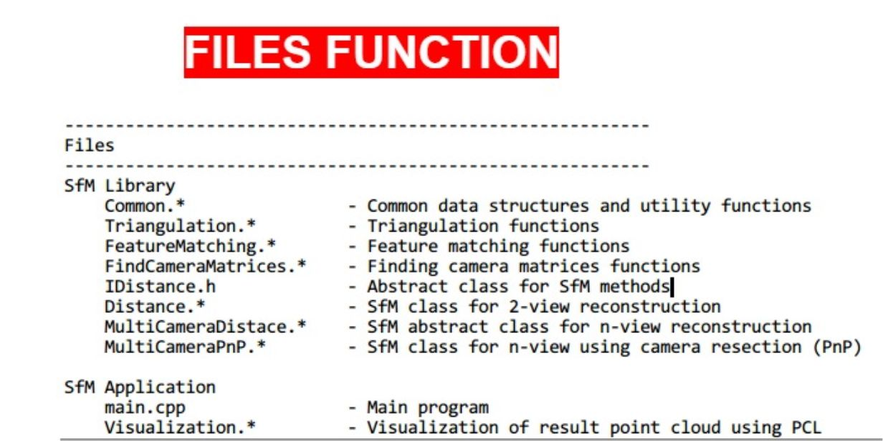
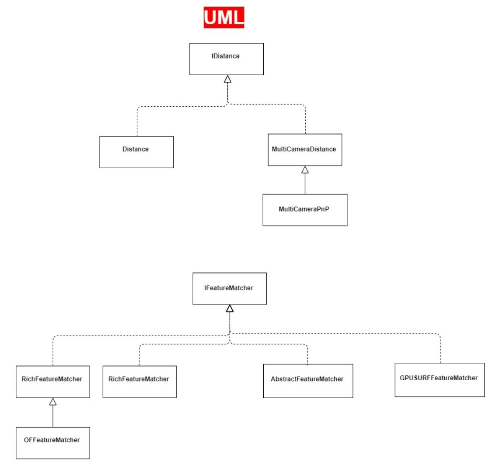
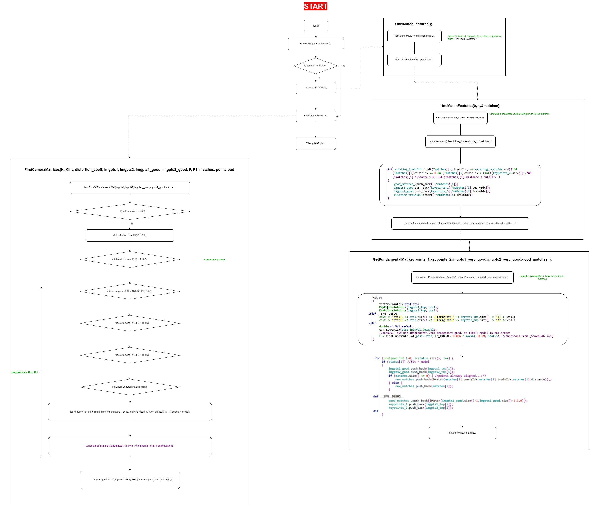

0.this project modified by Chapter4_StructureFromMotion
1.non gpu version is better for beginner of learning CV . i.e. compile the project would be easy .
2.structure from two views
1 | void OnlyMatchFeatures(int strategy = STRATEGY_USE_OPTICAL_FLOW + STRATEGY_USE_DENSE_OF + STRATEGY_USE_FEATURE_MATCH) { |
1 | void OnlyMatchFeatures(int strategy = STRATEGY_USE_OPTICAL_FLOW + STRATEGY_USE_DENSE_OF + STRATEGY_USE_FEATURE_MATCH) {//Q |



original:Chapter4_StructureFromMotion